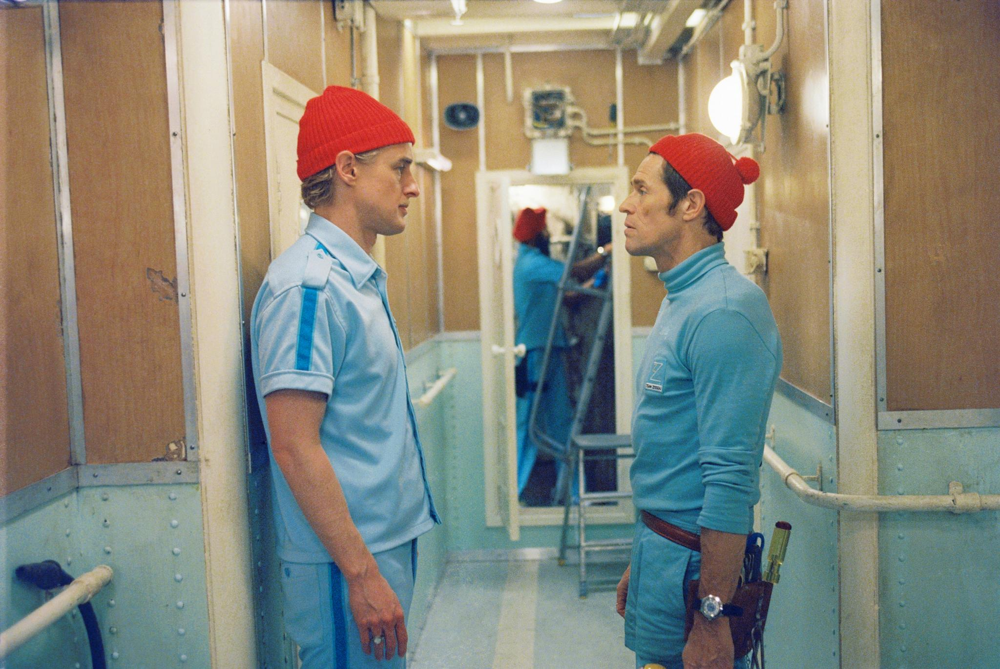

The Life Aquatic with Steve Zissou is a 2004 American comedy-drama film directed, co-written, and co-produced by Wes Anderson.[2][3] It is Anderson's fourth feature length film, released in the U.S. on Christmas 2004. It was written by Anderson and Noah Baumbach and was filmed in and around Naples, Ponza, and the Italian Riviera.
The film stars Bill Murray as the eponymous Zissou, an eccentric oceanographer who sets out to exact revenge on the "Jaguar shark" that ate his partner Esteban. Zissou is both a parody of and homage to French diving pioneer Jacques-Yves Cousteau (1910–1997), to whom the film is dedicated. Cate Blanchett, Willem Dafoe, Michael Gambon, Jeff Goldblum, Anjelica Huston, Owen Wilson, Seu Jorge, and Bud Cort are also featured in the film.
